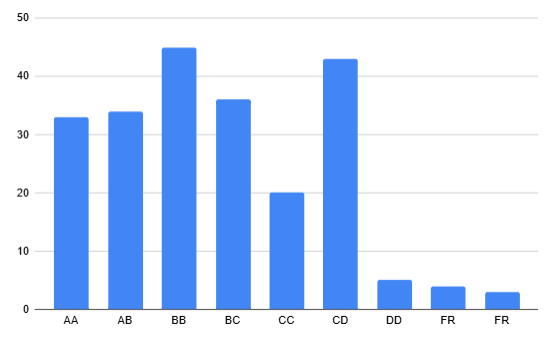

Communications Lab

Grading :previous offering (general trend is the same)
Grading
Lab performance -50
Midsem – 20
Endsem – 30
Resources
GNU Notes
github refernce 1
Github Reference-2
Course Drive
↑